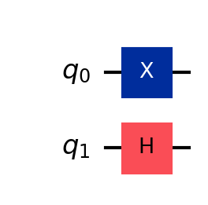

Python Setup
Table of Contents
1. Installing Python
[Go back to Table of Contents]
1.1. Objectives
- Install a version of Python packaged in Anaconda or Miniconda
- Create a virtual environment with a specific Python release
1.2. Background (optional)
1.2.1. Virtual Environments
- You can use Python without virtual environments, but things can get messy
quickly
- We typically add Python packages to extend its capabilities
- Sometimes, different projects require different packages
- Packages may conflict, or different projects may even require different versions of the same package, or even different versions of Python
- Example: Suppose Project A requires packages W, U, and V, but Project B requires
packages V, X, and Y. Some conflicts that can arise:
- Package X may be incompatible with package U, rendering your code for Project A unusable. Remove package U, and you can no longer work on Project B
- Project A and Project B might require different versions of package V
- Project A and Project B might require different versions of Python
- To prevent such conflicts, it is customary to use virtual environments
- A virtual environment is like a custom installation of Python with only those packages required for a specific project or application
1.2.2. Creating and Using Virtual Environments
- There are multiple ways to create virtual environments
- Use the standard Python approach
- Create virtual environments for Python versions previously installed on your computer
- Advantages of the standard Python approach:
- Access to the latest packages from pip utility
- Use Conda
- Conda creates and manages environments, which are similar to virtual
environments, with some improvements
- Added flexibility. You can create virtual environments that use Python versions not yet installed on your computer
- Use the
condautility to manage environments, add/remove packages, etc. - Environments are journaled, so that you can return to a previous version
of your environment
- This is useful if you install package Y, but it conflicts with other packages in your environment
- You can simply restore your environment to an earlier version
- Drawbacks
- Packages on conda-forge, the package repository for
condamay not be up to date with the ones on PyPI, the repository for standard Python packages- You can still install packages from PyPI in
condaenvironments, however
- You can still install packages from PyPI in
- Packages on conda-forge, the package repository for
- Conda creates and manages environments, which are similar to virtual
environments, with some improvements
- Use the standard Python approach
1.2.3. Benefits of Using Python Virtual Environments
- Why Use Virtual Environments in Python?
- Isolation of Dependencies
- Avoid conflicts between package versions required by different projects.
- Each project can have its own dependencies without interfering with others.
- Consistency Across Environments
- Reproduce the same environment for development, testing, and production.
- Ensure compatibility and avoid "it works on my machine" problems.
- Simplified Dependency Management
- Install project-specific packages without requiring administrative privileges.
- Cleanly manage updates or removals of packages for a single project.
- Protection of Global Python Environment
- Prevent unintended modifications to the global Python environment.
- Avoid accidental installation of packages that could affect other projects.
- Flexibility with Python Versions
- Use different Python versions for different projects.
- Test projects under multiple Python versions without conflicts.
- Integration with Development Tools
- Tools like Jupyter, nbgrader, and linters work seamlessly with the virtual environment.
- Specific configurations (e.g., pylint, mypy) can be tied to the project environment.
- Ease of Collaboration
- Use a `requirements.txt` or `pyproject.toml` file to share the exact environment with team members.
- Simplifies onboarding for new collaborators.
- Best Practices
- Always activate the virtual environment when working on the project.
- Use tools like `venv`, `virtualenv`, or `conda` to create and manage environments.
- Leverage environment management tools like `direnv` for seamless activation.
- Isolation of Dependencies
1.3. Procedure
1.3.1. Overview
We provides some guidance on installing Python.
If you're a student in one of my courses, please make sure you install the correct release of Python, as listed in Table 1.
| Year | Semester | Course | Release |
|---|---|---|---|
| 2025 | Spring | Quantum Computing | 3.11 |
| 2024 | Spring | Quantum Computing | 3.10 |
There are two ways I suggest for installing Python:
- Using Anaconda (recommended)
- Using standard Python from python.org (not recommended, but if option 1 fails, try this)
I recommend using Anaconda or Miniconda. They provide the flexibility to create environments with a specific Python version, even if you don't have that version installed yet. With standard Python, you can only create a virtual environment using a Python version that you already have installed.
Miniconda is simply a stripped-down version of Anaconda. Getting Started with Anaconda has some discussion on when to choose one version over the other.
The video tutorial here does not include a Linux installation, nor does it discuss installing Miniconda.
1.3.2. Anaconda Installation
I recommend the Anaconda installation over Miniconda and standard Python. In fact, most or all of the instructions in these tutorials assume you have installed Anaconda, and you have the Anaconda Navigator included with Anaconda.
- Mac OS
I'm a Mac user, so I know this one best.
I recommend using the command-line installation. This has worked best for me in terms of adding packages.
- From the download page, you can choose "Get additional installers"
- You can use the Skip registration link, or you may register your e-mail if you wish.
- Get the “Command Line Installer” appropriate for your computer
- Intel processor: pick “64-Bit (Intel chip) Command Line …”
- Apple processor: pick “64-Bit (Apple silicon) Command Line …”
∗ Follow the Mac Command line install instructions
- From the download page, you can choose "Get additional installers"
- Windows
You can either install Anaconda/Miniconda natively in Windows, or you can use WSL to install it in Linux on your Windows machine.
For a windows installation:
- Go to the Anaconda download page
- Skip the registration, or register your e-mail as you see fit
- Go to the Anaconda download page
- UNIX/Linux
You are on your own, but I think it should be pretty straight-forward.
1.3.3. Miniconda Installation
I do not recommend a Miniconda installation at this time. However, if your computer is tight on storage, this may be a better option than Anaconda.
If you're a Windows user, I recommend Anaconda over Miniconda, sinc the Anaconda Navigator app also includes a PowerShell prompt, where you can use terminal commands to create enviroments and install packages.
I've never done this yet, but the Miniconda installers are on the Anaconda download page. You just have to scroll past the Anaconda installers.
There are installation instructions for Miniconda, with a procedure for command-line installation.
1.3.4. Standard Python Installation
I do not recommend this installation at this time.
Visit the download page and get the version of Python you wish to use.
Make sure you get the correct version if you're in one of my courses. Table 1 is a listing of my courses along with the required Python version.
1.4. Test Your Python Installation
Let us test your Python operationally. A nice way to run Python is in Jupyter Lab.
This test assumes you already have jupyter lab installed, which you likely
have if you used Anaconda. If you used Miniconda or standard Python, you may not
have jupyter lab. If that's the case, we'll install it later after we make a
(virtual) environment. You can skip over the operational test for now.
To run Python, you can do the following:
- Launch Jupyter Lab:
- On a Mac
- Open a Terminal window
- type
jupyter labfollowed byRETURNto launch Jupyter Lab
- On a PC
- Start the Anaconda Navigator
- Click the "Jupyter Lab" tile/icon
- On a Mac
- Once you have opened Jupyter Lab, a new web browser will arise with a Jupyter Lab graphical interface
- You can begin coding once the Jupyter Lab window is open!
If you need help starting Jupyter Lab, please see my video
1.4.1. A Hello World Program
Try using the code of Listing 1 as starting code.
print('hello world')
hello world
- Observations:
- There is a
print()command with a single argument - That argument is a
string, which is a sequence of characters - You can define a
stringby putting the character sequence between a pair single quotes ('some text') or double quotes (i.e,"some text"- chose one or the other, but not both to define yourstring) print()does one thing: it makes the inputstringvisible in the Python output
- There is a
1.4.2. Python Version Check
- Another check you can perform is to make Python print its version, as shown
in Listing 1
- We see that I'm using Python 3, version 3.11.7.
- The
#character is the beginning of an inline comment- The
#character an any subsequent characters in that line of code are not evaluated - Comments are strictly for the human reader to aid in code understandability (very important)
- Comments clarify code to others and clarify a thought process to oneself
- The
import sys # make the sys package available for use print(sys.version) # print the version information
3.11.7 (main, Dec 15 2023, 12:09:56) [Clang 14.0.6 ]
2. Set Up a Python Environment
[Go back to Table of Contents]
2.1. Objectives
- Create a Python environment in Conda.
- Install extend that environment by adding required packages.
- Verify that the desired packages were installed
- Try coding in Python
2.2. Overview
Here is a video tutorial:
A warning about this video: I did not illustrate how to get a specific version
of Python, so when using conda create ..., please add python=3.XX, where xx is the appropriate release
number.
Please note: please use pip install ..., even though this video demonstrates
conda install ....
The following sections provide detailed instructions for setting up an
enviornment using conda.
2.3. Create an Environment
2.3.1. Using conda (recommended)
To create an environment:
- Open a terminal application
- On Windows, start the Anaconda Navigator and launch the Powershell application
- On a Mac, open a Terminal (or iTerm2) window
In the terminal, type
conda create --name <EnvName> python=3.XXand press RETURN (ENTER) to execue the command
- Here, you replace
<EnvName>the the specific name you choose for your environment - Short, simple names will be most effective
- Here, you replace
- This creates your environment and specifies that we want to use
Python 3.XX, where you replace
XXby the numerical value from Table 1- Newer versions of Python may not work well with Qiskit
You can verify that your environment is created by typing
conda info --envs
- If the environment appears in the resulting list, you have successfully created it
- Otherwise, you may need to try again
2.3.2. Using venv in Standard Python (not recommended)
To create an environment:
- Open a terminal application
- On Windows, start the Anaconda Navigator and launch the Powershell application
- On a Mac, open a Terminal (or iTerm2) window
- In the terminal,
- Type and customize the following OS-specific command, and press RETURN
(ENTER) to execue the command:
Mac OS/UNIX/Linux
python3.XX -m venv <path/to>/<EnvName>
Windows
python3.XX -m venv <path\to>\<EnvName>
- Here, you replace
<EnvName>the the specific name you choose for your environment, and you can specify a path on your computer where the virtual environment files will be stored- Short, simple environment names will be most effective
- Type and customize the following OS-specific command, and press RETURN
(ENTER) to execue the command:
- This creates your environment and specifies that we want to use
Python 3.XX, where you replace
XXby the numerical value from Table 1- Newer versions of Python may not work well with Qiskit
2.4. Activate your Environment
- After creating your environment–especially if this is the first environment youve created–it is likely that your base environment is active. This means your new environment is not active.
- You can tell this by looking at the start of your prompt string
- If it says
(base), then, then your base environment is active
- If it says
2.4.1. Conda Activation
To activate you environment:
Type the following at the Powershell or Terminal prompt:
conda activate <EnvName>
- This activates your environment so that you can:
- install packages or
- use the packages you previously installed in that environment
- This activates your environment so that you can:
You can deactivate your environment by typing conda deactivate at
the Powershell/Terminal prompt, but don't do that yet. We need to keep our
environment active so we can extend it by installing packages.
2.4.2. Virtual Environment Activation (Standard Python)
To activate you environment:
- Choose the appropriate command for your OS and enter it a the Powershell or
Terminal prompt:
Mac OS/UNIX/Linux
source <path/to>/<EnvName>/bin/activateWindows
<path\to>\<EnvName>\Scripts\activate
- This activates your environment so that you can:
- install packages or
- use the packages you previously installed in that environment
You can deactivate your environment by typing deactivate at
the Powershell/Terminal prompt, but don't do that yet. We need to keep our
environment active so we can extend it by installing packages.
2.5. Installing Packages
We will install the packages you need for this course. The preferred way will be
to use the requirements.txt file, which installs all the packages I want you
to have. If that fails, we can try the manual method.
2.5.1. Install Packages from a Requirements File (Recommended)
- Make sure your desired conda environment (or virtual environment) is active
Copy and paste the following command into the Terminal or Powershell:
pip install -r https://enriquepacis.github.io/BU-ECE-IntroQuantumComputing/python/requirementsQIS.txt
This command points to a file
requirementsQIS.txt, which is hosted on GitHub. It contains information about which packages you need for my course.
2.5.2. Manual Install (not recommended)
If you're here, we may assume your install from the requirements file failed, or you just want to do things the hard(er) way.
- For this course, you must install packages for your new environment
- Here, we will focus on the following:
jupyterlab- allows for an interactive session in your new environment (its installed by default in thebaseenvironment)qiskit- allows you to develop quantum computing circuitsqiskit-aer- allows you to simulate quantum circuitsmatplotlib- helps you visualize quantum circuitspylatexenc- helps you visualize quantum circuits in a nicer way than the default
- For a walk-through on the manual package installation, see my video A Python Environment for Quantum Computing
To manually install packages in an environment:
- Open the Powershell or Terminal as needed
- Activate the desired environment
For each package to be installed, enter in the command prompt:
pip install <packagename>
2.5.3. Verify Package Installation
To verify that your packages were installed:
Use the following command in the Terminal/PowerShell:
pip list
This will list all the packages installed in your active Python environment, along with their version numbers.
- Check that packages such as
jupyter,matplotlib,pylatexenc, andqiskitare listed in your result.
If you see the desired packages, you have a good indication that your setup is complete. The next step is to operationally test your installation.
2.6. Operational Test
Do your newly-installed Python packages work?
Let's find out by doing the following:
- Launch Jupyter Lab:
- On a Mac
- Open a Terminal window
- type
jupyter labfollowed byRETURNto launch Jupyter Lab
- On a PC
- Start the Anaconda Navigator
- Click "Jupyter Lab" tile/icon
- On a Mac
- Try the following tests:
Copy and paste the code of Listing 1 into a Jupyter cell.
import qiskit print(qiskit.__version__)
1.3.1
You should expect to see
qiskitversion1.Xafter usingSHIFT+ENTERto evaluate the cell.Copy and paste the code of Listing 4 into a Jupyter Lab cell, and evaluate it:
from qiskit import QuantumCircuit qc = QuantumCircuit(2) qc.x(0) qc.h(1) qc.draw()

Figure 1: A simple quantum circuit built and visualized in
qiskit. This will work only ifqiskitis properly installed, along withpylatexenc.If your installation was successful, you may see a circuit image like that of Figure 1. If your circuit rendering is a more rudimentary text-art-type drawing, despair not. You can customize your rendering as follows:
- On Mac OS/UNIX/Linux:
- Find your
qiskitconfiguration directory. It should be~/.qiskit/, where~denotes your user directory (folder), and files or directories beginning with.are hidden configuration files. Inside the
~/.qiskit/directory, add a file namedsettings.confwith the following contents:[default] circuit_drawer = mpl state_drawer = latex
- Find your
- Windows
- Place the
settings.conffile described above in the appropriate folder.- In Windows, the path typically is
C:\Users\<your_user_name>\.qiskit
- In Windows, the path typically is
- Place the
- On Mac OS/UNIX/Linux: